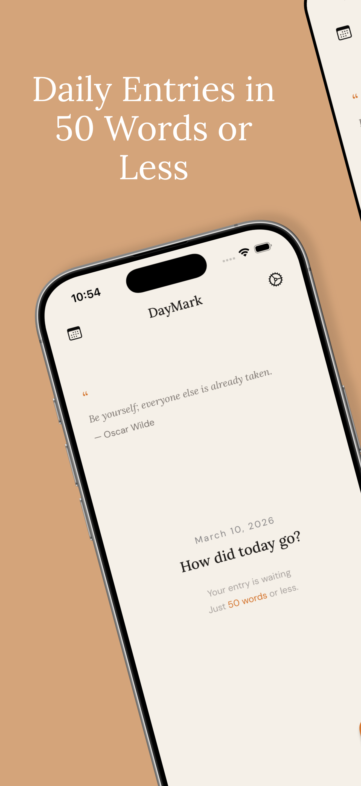
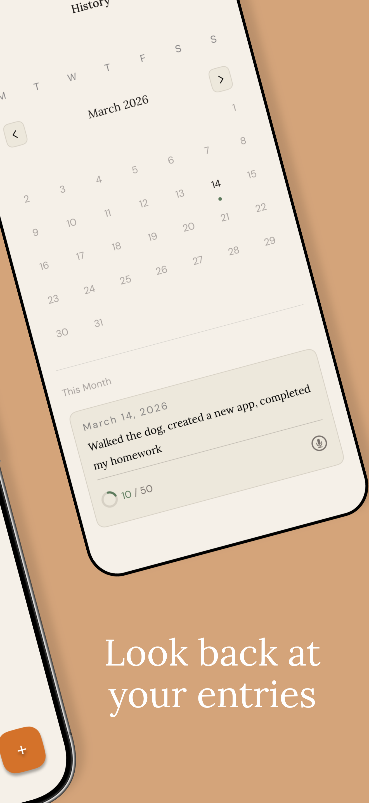
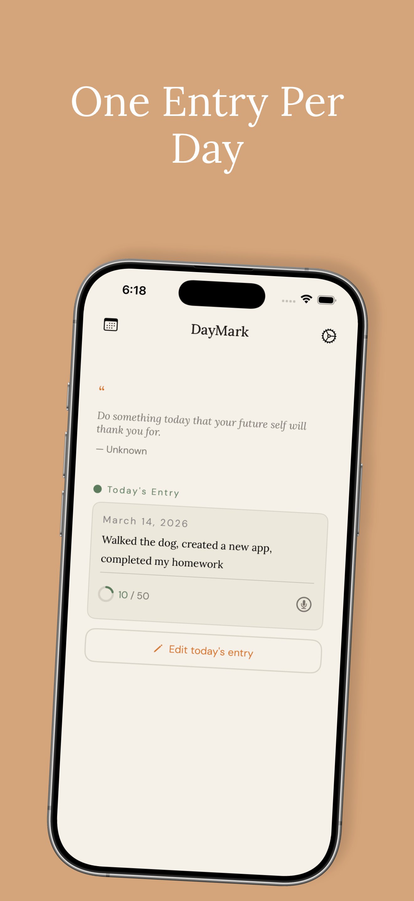
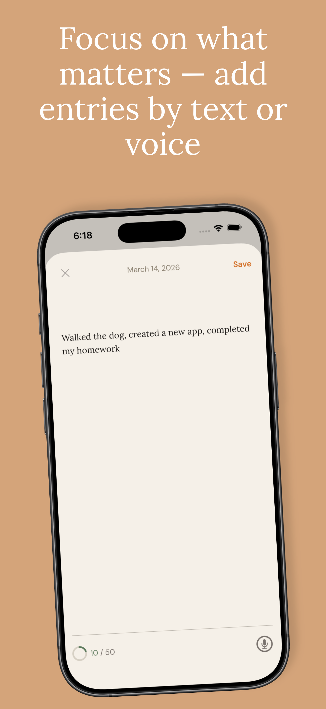
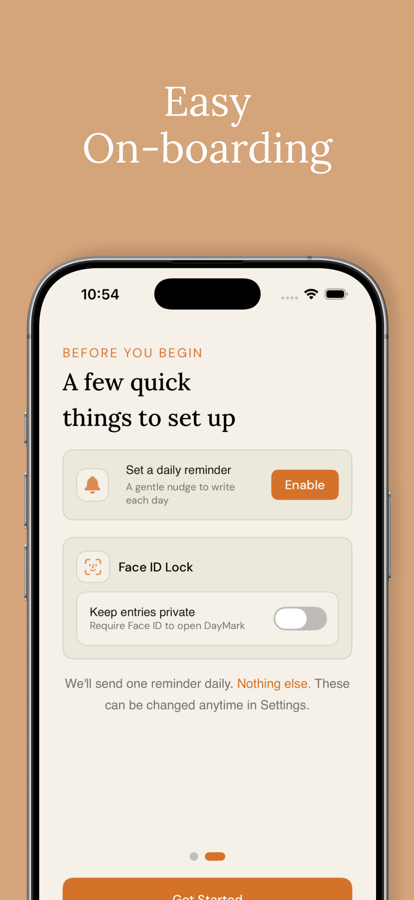
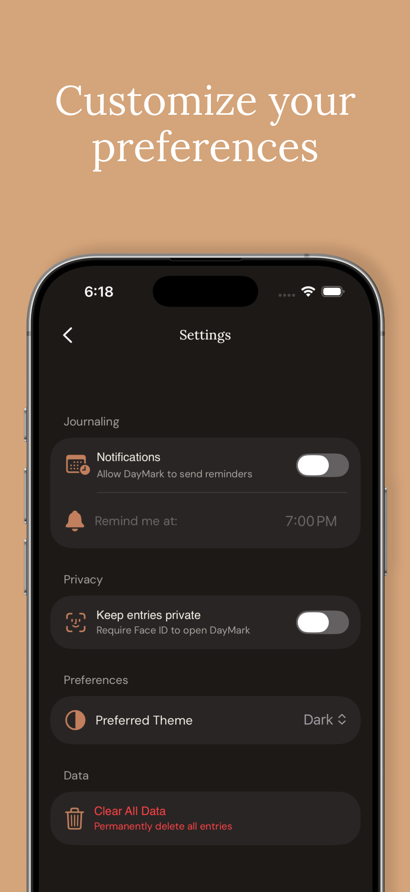

Building out DayMark - 0 to 1
Building Out DayMark App
https://apps.apple.com/us/app/daymark-daily-journal/id6760376611






Idea + Design
I found the easiest way to keep building any app or side project without abandoning it midway is to build something useful that you’ll actually use.
For me, I started writing down 1-3 sentences of what I did each day to ensure each day was somewhat productive. I believe small wins over a long period time add up and there will be an inflection point where you start seeing exponential growth. I used the notes app to do it but wanted a better UI with it.
That’s how I got started with DayMark. I wanted an app that was not insanely complicated to build but had a bunch of little cool features and one that I would actually use daily.
For the design, I worked with Claude and told it what color palette I liked and what I wanted certain screens to look like. I’m not a creative person but I am very picky when it comes to how I want things to look (more on this later)
Claude gave me a bunch of mockups and I picked the one I liked the most and built my app from there
Development
I was extremely picky with the UI and how I wanted things to look. Even though I used two fonts (Lora and DM-Sans), I spent a lot of time deciding which text looked better with which font and weight. To make this consistent, I created a font extension + view modifiers so common text styles were consistent throughout the app
I actually spent a lot of time on FaceID + Notifications + User Defaults. There were a lot of edge cases to deal with. For example, in Notifications, there are both User-enabled and Device-enabled notifications. Users can still opt out of notifications even if the device is enabled.
Similarly for FaceID, I used a toggle for the UI and a value which read from user defaults (since users can opt into FaceID, but also there is an OS level on whether FaceID is even enabled)
One big issue with this is if FaceID failed or was not allowed, the toggle wouldn’t roll back. I dealt with this using a computed binding which read from my view model of the FaceID status via get and update during set. If the biometrics failed, I roll back the value. (The value that is being read from the toggle is the computed binding, but this value is derived from a value i save/get from User Defaults)
Previous I ran into infinite loop issues with toggle when i tracked it via the
.onChange modifier
Another thing I dealt with was using @AppStorage for User Defaults. I wanted to
mainly keep the logic inside my View Model, so instead of using @AppStorage (which i think
is mainly designed for views), I used the standard User Defaults get/set.
For properties i was monitoring (i.e user notification time and preference),
I had the value saved but called didSet on it to update the UserDefaults
The last tough feature was adding voice and microphone support. I basically took the code from Apple’s sample code for speech recognition and adapted it to my app. Speech can get surprisingly tricky to handle: once again there is OS level permission AND user level permission(with microphone access)
Deploying to App Store
This process was actually kind of time consuming to do since it was my very first time doing it. Its much more involved than deplyoing a website where its as easy as linking your repository to something like Railway / AWS Amplify. It also costs $99 to enroll in the Apple Developer Program.
I used AppScreens to take screenshots for my app. There were many templates and variations so I spent some time picking the ones I liked. There is a nice feature where you setup the API key credentials and it links directly to your app store page to automatically populate the screenshots for you. Ultimately I had to pay $25 for the plan to use the right templates and have this workflow setup.